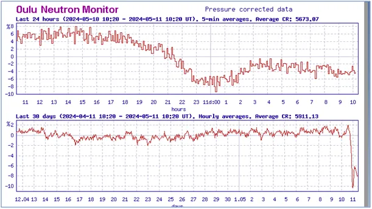
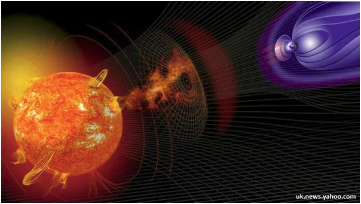
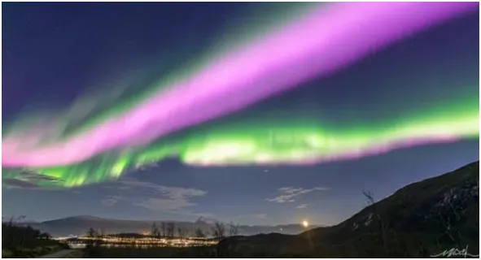

Wielkie bum na Słońcu!
Wczoraj ok. naszej 18:00 do Ziemi dotarła fala materii i promieniowania po wyrzucie plazmy na Słońcu. Wyrzuty takie są dość częste, ale bardzo rzadko skierowane w stronę Ziemi (statystyka sfery). Taki "atak" mobilizuje jonosferę do aktywności.

Aktywna jonosfera świeci, bo cząstki mają na tyle dużo energii, że emitują fotony w paśmie widzialnym, gdy zwykle emitują tylko podczerwień. Aktywna jonosfera blokuje dopływ szkodliwego promieniowania z głębi Kosmosu.

To spowoduje przez kilka dni spadek ilości chmur i lepsze nagrzanie oceanów między zwrotnikami, co o kilka dni oddali od nas nadchodzące globalne oziębienie w najbliższych dekadach. "Kosmiczna prognoza do 2045. Globalne oziębienie!"

Widać na wykresach spadek liczby neutronów w atmosferze blisko gruntu, co jest pochodną natężenia szkodliwego promieniowania docierającego do nas z Kosmosu. pawelklimczewski.pl/2024/02/03/kosmiczna-prognoza-do-2045-globalne-oziebienie
Paweł Klimczewski